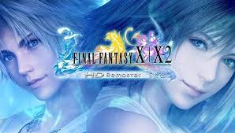

Guild Wars 2, es el nombre oficial de la secuela del videojuego de rol multijugador Guild Wars,
desarrollado por ArenaNet, filial de NCsoft.
La historia empezará 250 años después de la última expansión de la primera parte, Eye of the North.
Los personajes de Guild Wars no se podrán transferir a Guild Wars 2, pero sí los títulos conseguidos y
se reservarán los nombres de los personajes de aquellas cuentas vinculadas a la página de NCsoft.
Además se podrán conseguir títulos y objetos completando el "Hall of Monuments" (Museo de monumentos) de
Guild Wars, aunque estos objetos no darán ninguna ventaja respecto a los nuevos jugadores, ya que
tendrán una finalidad meramente estética. No habrá esbirros (ni tampoco héroes) como en la entrega
anterior.
Requisitos
Mínimos
CPU
Intel® Core™ 2 Duo a 2,0 GHz, Core i3, AMD Athlon™ 64 X2 o superior
RAM
2GB
SO
Windows® XP Service Pack 2 o superior
Tarjeta gráfica
NVIDIA® GeForce® 7800, ATI Radeon™ X1800, Intel HD 3000 o superior (256 MB de VRAM y shader
model 3.0 o superior)
Disco Duro (Espacio libre)
25GB
World of Warcraft
World of Warcraft (abreviado como WoW, literalmente en español Mundo de Warcraft) es un videojuego de
rol multijugador masivo en línea desarrollado por Blizzard Entertainment.
Es el cuarto juego lanzado establecido en el universo fantástico de Warcraft, el cual fue introducido
por primera vez por Warcraft: Orcs & Humans en 1994. World of Warcraft transcurre dentro del mundo de
Azeroth, cuatro años después de los sucesos finales de la anterior entrega de Warcraft, Warcraft III:
The Frozen Throne.
Blizzard Entertainment anunció World of Warcraft el 2 de septiembre de 2001.
El juego fue lanzado el 23 de noviembre de 2004, celebrando el décimo aniversario de la franquicia
Warcraft. La primera expansión del juego The Burning Crusade fue lanzada el 16 de enero del 2007.
La segunda expansión, Wrath of the Lich King, fue lanzada el 13 de noviembre de 2008.8 La tercera
expansión, World of Warcraft: Cataclysm fue anunciada en el BlizzCon 2009 y fue lanzada el 7 de
diciembre de 2010.
La cuarta expansión, World of Warcraft: Mists of Pandaria fue anunciada en el BlizzCon 2011 y fue
lanzada el 25 de septiembre del 2012. La quinta expansión, World of Warcraft: Warlords of Draenor fue
anunciada en el BlizzCon 2013 y fue lanzada el 13 de noviembre de 2014.
La sexta expansión, World of Warcraft: Legion fue anunciada en el BlizzCon 2015 y fue lanzada el 30 de
agosto de 2016. La séptima expansión, World of Warcraft: Battle for Azeroth fue anunciada en el BlizzCon
2017 y recientemente lanzada el 14 de agosto de 2018 siendo la primera expansión en la historia del
juego en ser lanzada globalmente de forma simultánea.
Con 7.7 millones de suscriptores, World of Warcraft continúa siendo con diferencia el juego en línea
por suscripción con el mayor registro de usuarios, manteniendo el récord Guinness para el MMORPG
(Massive Multiplayer Online Rol Playing Game) más popular.
Requisitos
Mínimos
Recomendados
CPU
Intel Core 2 Duo E8500 o AMD Phenom II X3 720
Intel Core i5-3330, AMD FX-6300, o superior
RAM
2GB
4GB
SO
Windows XP/Windows Vista/Windows 7/Windows 8/Windows 10
Tarjeta gráfica
NVIDIA GeForce GT 440, AMD Radeon HD 5670 o Intel HD Graphics 5000
NVIDIA GeForce GTX 750 Ti o AMD Radeon R7 260X
Disco Duro (Espacio libre)
20GB
>
Final Fantasy X

Final Fantasy X es un RPG desarrollado y publicado por la compañía Squaresoft (ahora conocida como
Square Enix tras la fusión en 2003 con Enix) para el sistema PlayStation 2, llegando a Europa en 2002;
es la décima entrega de la serie Final Fantasy, y fue la primera en desarrollarse para esta
videoconsola.
Presentado en el año 2001, está entre los 20 videojuegos de consola más vendidos de la historia; ha
vendido más de 10 millones de copias en todo el mundo, convirtiéndose en el segundo juego más vendido de
la saga. También fue votado por los lectores de la revista japonesa de videojuegos Famitsu como el mejor
videojuego de todos los tiempos.
Dentro de la serie Final Fantasy, este juego marca una importante transición entre escenarios totalmente
prerrenderizados a entornos tridimensionales completos gracias al procesador Emotion Engine de
PlayStation 2. No obstante, algunos interiores y escenarios concretos siguen utilizando los modelos
prerrenderizados.
Final Fantasy X es el primero de la serie en presentar un amplio rango de expresiones faciales
realistas, así como otros logros tecnológicos, como la variación de luces y sombras entre las distintas
partes de la vestimenta de un personaje. También fue la primera entrega de la serie en incorporar voces
en los diálogos de los personajes, dobladas por actores profesionales, y también es el primero en tener
una secuela, Final Fantasy X-2.
Requisitos
Mínimos
Recomendados
CPU
2GHz Dual Core CPU
2.4GHz quad-core CPU
RAM
1GB
2GB
SO
Windows Vista ó posterior
Tarjeta gráfica
NVIDIA Geforce 9600GT VRAM 512MB ó posterior / ATI Radeon HD 2600XT VRAM 512MB ó posterior
NVIDIA Geforce GTX 450 / AMD Radeon HD 5750 con 512MB